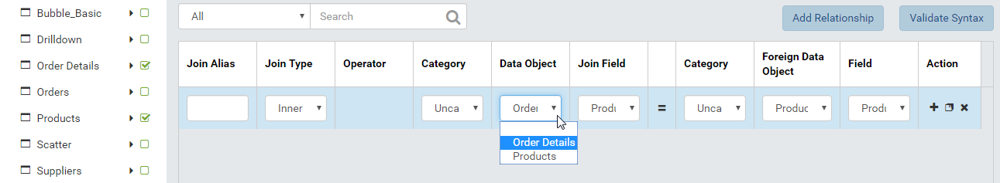

Report on Multiple Tables¶
Data required for a report does not always come from a single table, there are scenarios where multiple tables are needed.
Reports on two tables with direct relationship¶
In this scenario, data needed for a report does not come from one single table, but from a primary table and a related one. The primary table must have a field to contain the id value of the related table. Both tables simply need to be selected for the report to work.
{kind=link}
Fig. 393 ProductID Ordered By Discount
For example, table Order
Details in Northwind database stores the list of products (ProductID)
together with the discount percentage in each order. This data allows
for a report on products with the highest discount percentage. However,
that report can only show the meaningless product IDs (Fig. 393).
{kind=link}
Fig. 394 ProductName Ordered By Discount
The report will be more useful if it includes the product name (stored inside table Products) (Fig. 394). To do that:
Select both tables Order Details and Products in Middle Panel.
Define relationship between two tables if needed (See Add and remove relationships) (in this case the relationship has already been defined and automatically populated). (Fig. 395)
Add a Grid report part.
In Columns box, use the ProductName field instead of ProductID.
In Fig. 394, the ProductID is intentionally kept to be compared with the previous figure.
Fig. 395 Order Details - Products Relationship
{kind=link}
Reports on two tables with relationships via a third table¶
Sometimes, data in two tables are related to each other through a third table (many-to-many relationship). These two tables have no direct relationship, so a report with these two tables only will not work: all three tables need to be selected.
Note
A rule of thumb to detect this scenario is that the third table usually has only two fields, each contains the id value of either related table.
For example, a report is needed for the total sales per year in each of two cities Rio de Janeiro and Sao Paulo. The city values are in City field in Customers table while the sales are calculated from UnitPrice, Quantity and Discount fields in Order Details table. These tables are linked to each other by the Orders table although no field from this table is needed for the calculation. To design this report:
Select all three tables Customers, Order Details and Orders.
Define relationships if needed (See Add and remove relationships) (in this case the relationship has already been defined and automatically populated).
Drag the City field in Customers table into the Filter box.
Click the City field in Filter box to open Filter Properties.
Go to Filter Settings group, Filter Operator drop-down, select Equivalence then Equals (Manual Entry) then Multiple.
Type Rio de Janeiro and press Enter.
Type Sao Paulo and press Enter.
In Middle Panel, click Add Calculated Field to open Add Calculated Field pop-up.
Name the field “Sales”.
Build the expresion
[Northwind].[dbo].[Order Details].[UnitPrice] * [Northwind].[dbo].[Order Details].[Quantity] - [Northwind].[dbo].[Order Details].[UnitPrice] * [Northwind].[dbo].[Order Details].[Quantity] * [Northwind].[dbo].[Order Details].[Discount]
Click Ok to save the calculated field.
Add a Grid report part.
In Columns box, add the City field and the Sales calculated field.
Select City field in Columns box to open Field Properties.
Select “Group” as Function.
Select Sales field in Columns box to open Field Properties.
Select “Sum” as Function.
Select descending as Sort.